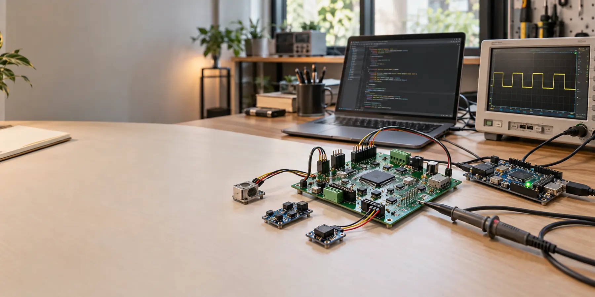
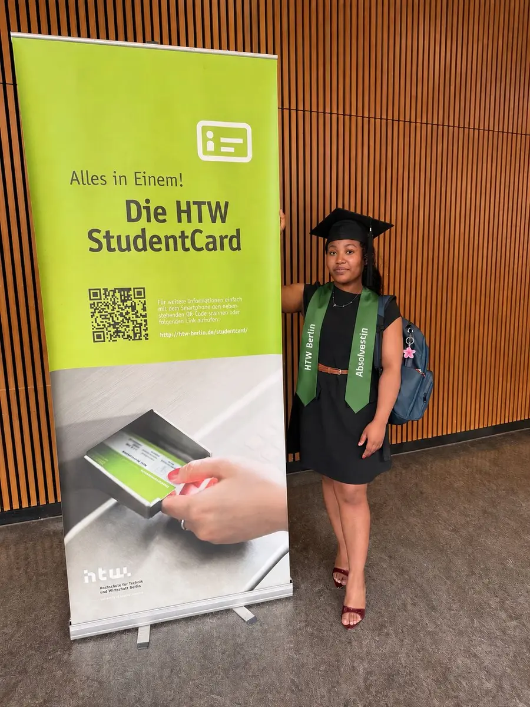
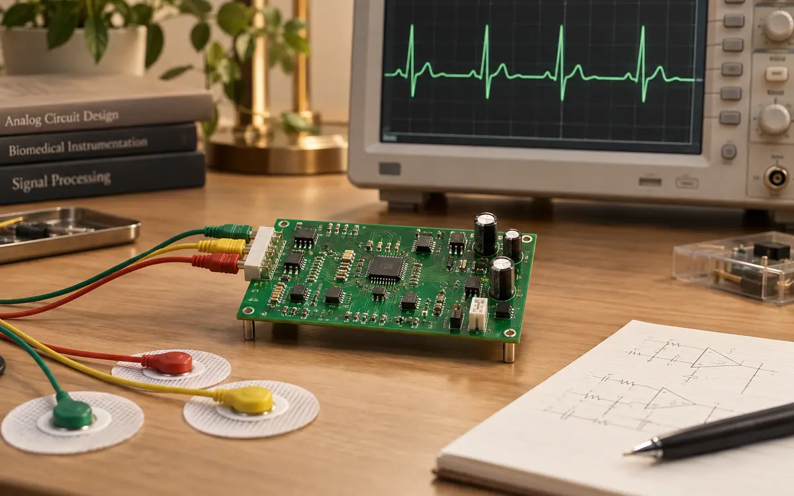
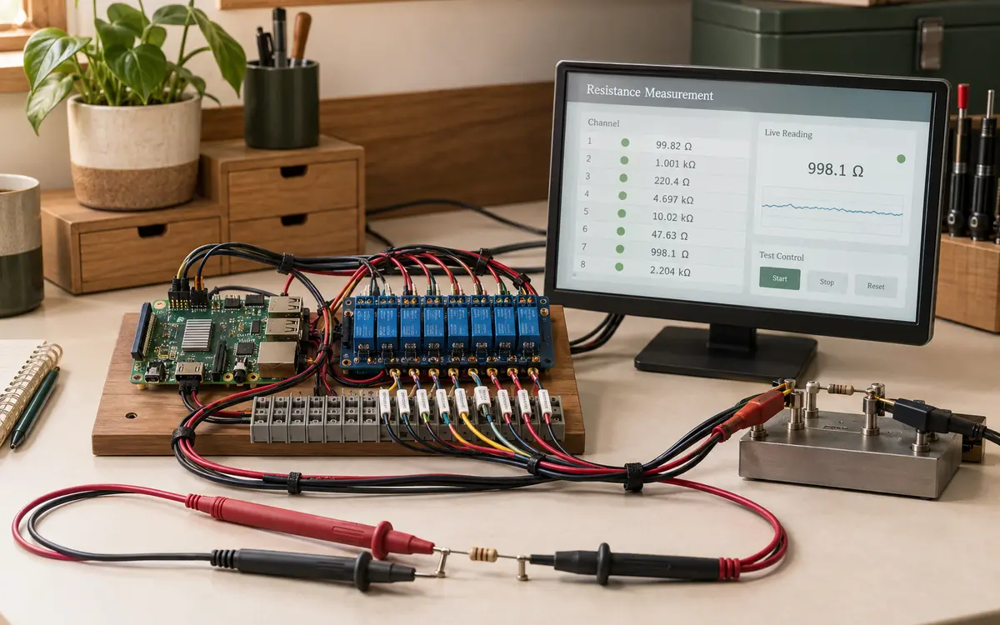
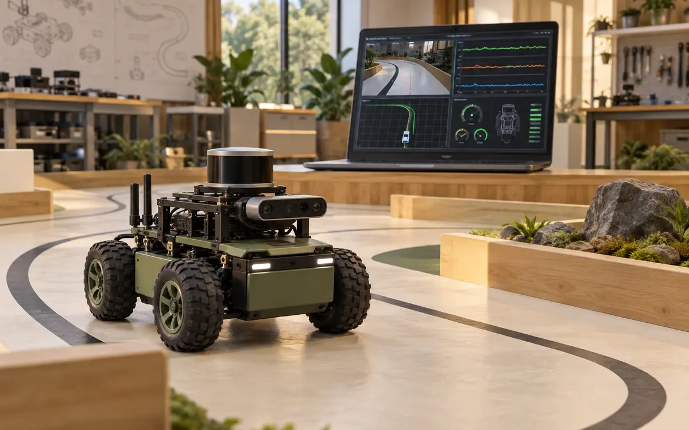
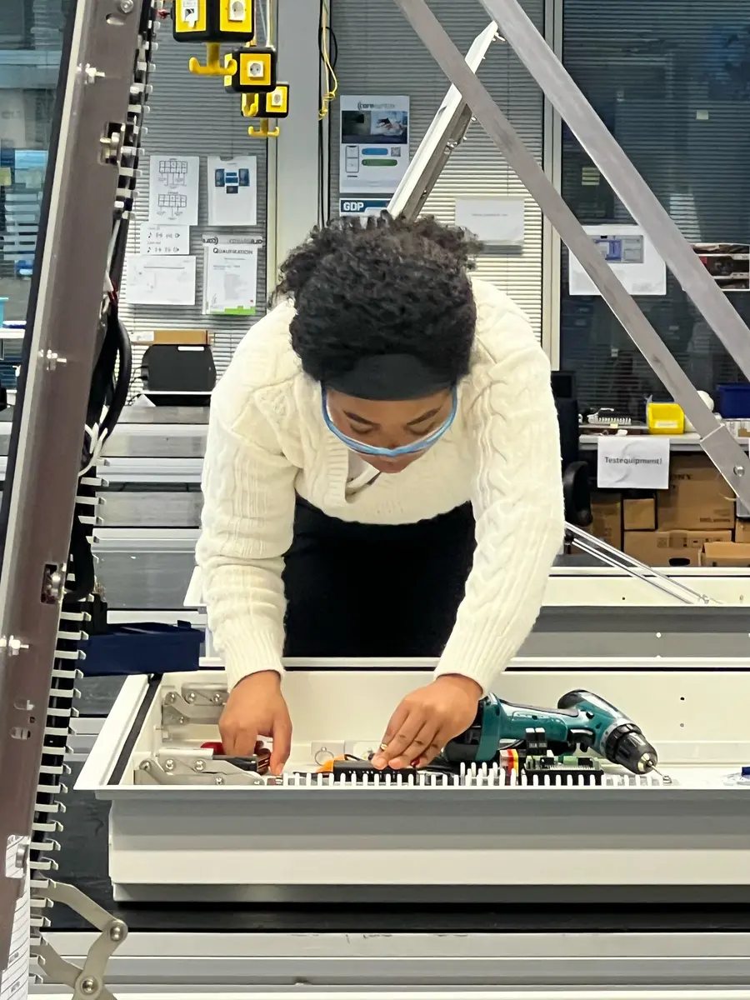
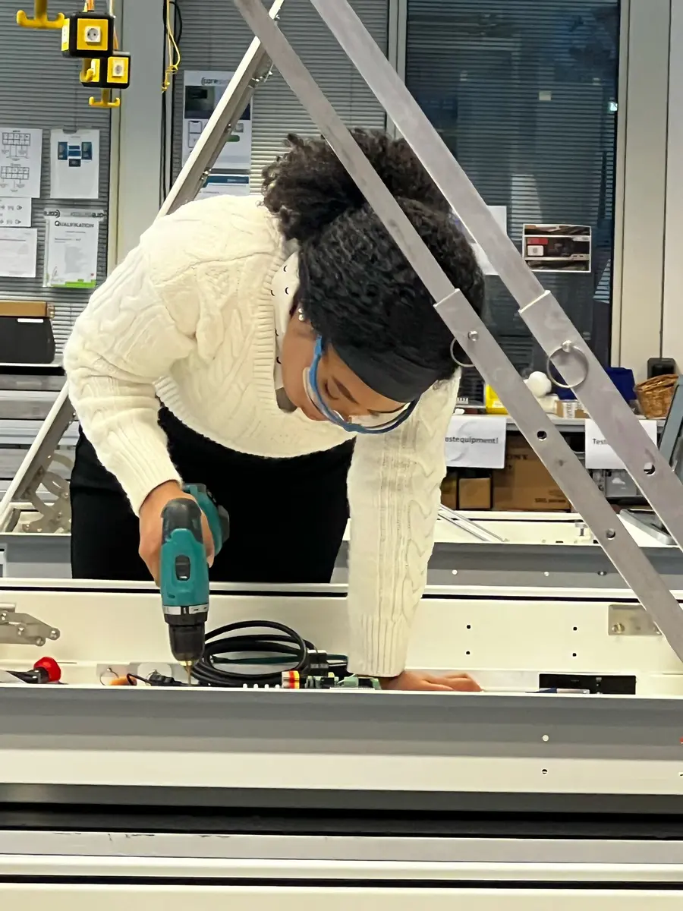

Smart Patient Monitoring System
Überwachung von Herzfrequenz und Temperatur mit Display und automatischer Alarmfunktion.
Arduino · C++ · Sensorik · I²C · OLED
Bachelorabsolventin der Gesundheitselektronik und Masterstudentin im Studiengang Computer Engineering an der HTW Berlin.
Meine Projekte ansehen GitHub-Profil
Ich interessiere mich besonders für Hardwareentwicklung, Embedded Systems und Medizintechnik. In meinen Studien- und Praxisprojekten verbinde ich Elektronik, Sensorik und hardwarenahe Softwareentwicklung.
Ich arbeite gerne praktisch und entwickle Lösungen von der Schaltung und dem PCB-Design bis zur Programmierung, Inbetriebnahme und Fehleranalyse.
Schaltungsentwicklung, eingebettete Software und praktische Systemintegration.
Eine Auswahl aus Hardwareentwicklung, Medizintechnik, Messsystemen und Robotik.

Überwachung von Herzfrequenz und Temperatur mit Display und automatischer Alarmfunktion.
Arduino · C++ · Sensorik · I²C · OLED

Entwicklung eines Schaltplans und PCB-Layouts zur Erfassung und Verstärkung eines EKG-Signals.
KiCad · Analogtechnik · PCB-Design · Messtechnik

Automatisiertes Messsystem mit Raspberry Pi, acht Relais und ungefähr 45 Messleitungen.
Raspberry Pi · Relais · KiCad · Python

Dummy-Publisher und Testsignale für ein ROS2-Visualisierungssystem zur Track- und Signalerkennung.
ROS2 · Python · Docker · Linux
Montage, Integration und Inbetriebnahme elektronischer Systeme im technischen Arbeitsumfeld.


Berlin, Deutschland
github.com/Angedjuissi